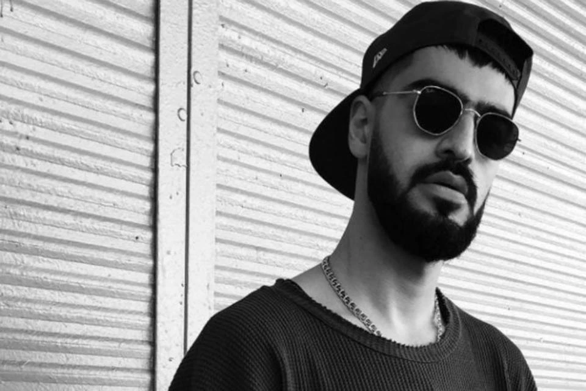

miyagi

кто он
Мияги (настоящее имя — Азамат Кудзаев) — российский рэпер, автор песен и продюсер. Он является одним из основателей музыкального дуэта Miyagi & Эндшпиль, который стал популярным благодаря своим хитам в жанре хип-хоп и рэп.
про него изыестнго
Мияги родился 6 ноября 1990 года в городе Владикавказ, Республика Северная Осетия-Алания, Россия.
В 2011 году он начал свою музыкальную карьеру, выпустив свой первый сольный альбом.
В 2013 году Мияги объединился с рэпером Эндшпилем, и они создали дуэт Miyagi & Эндшпиль.
Дуэт стал известен благодаря своим хитам, таким как "I Got Love", "Captain" и "Freeman".
Мияги также известен своими социальными и политическими комментариями в своих песнях.
Подробнее на Википедии
- Мияги родился 6 ноября 1990 года в городе Владикавказ, Республика Северная Осетия-Алания, Россия.
- В 2011 году он начал свою музыкальную карьеру, выпустив свой первый сольный альбом.
- В 2013 году Мияги объединился с рэпером Эндшпилем, и они создали дуэт Miyagi & Эндшпиль.
- Дуэт стал известен благодаря своим хитам, таким как "I Got Love", "Captain" и "Freeman".
- Мияги также известен своими социальными и политическими комментариями в своих песнях.